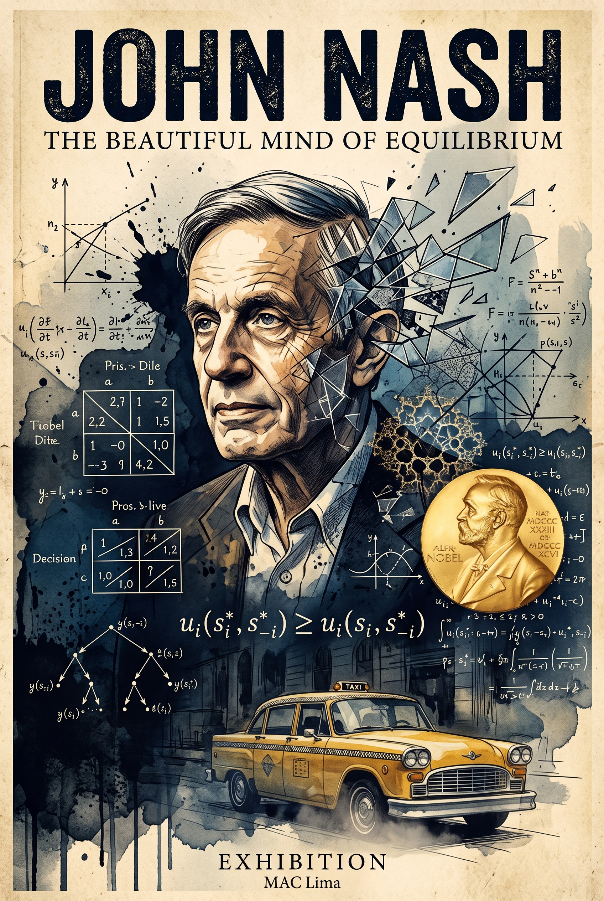

JOHN FORBES NASH JR.
The Beautiful Mind of Equilibrium
«Descifró el orden matemático que rige las decisiones humanas mientras luchaba en silencio contra el caos de su propia mente.»
Con solo 21 años y una tesis doctoral de 27 páginas en Princeton, John Nash revolucionó para siempre la economía, la biología evolutiva y la geopolítica con el Equilibrio de Nash. A los 30 años, en la cúspide de su carrera, una devastadora esquizofrenia paranoide lo sumergió en décadas de oscuridad, de las que emergió con lucidez heroica para recibir los máximos honores mundiales antes de su trágico final en 2015.

POSTER INTERACTIVO
Toca o haz clic en los 8 puntos interactivos sobre el póster original para desentrañar los secretos matemáticos, psicológicos y biográficos ocultos en cada trazo.
1. La Sien Fragmentada (Esquizofrenia)
Del hemisferio derecho de la cabeza de Nash emergen polígonos geométricos facetados y cristalinos que se disuelven en manchas de tinta china y acuarela azul ultramar. Este recurso plástico simboliza la ruptura de la percepción provocada por la esquizofrenia paranoide severa diagnosticada en 1958, cuando Nash comenzó a ver patrones ocultos y conspiraciones extraterrestres en los periódicos.
¿Qué es el Equilibrio de Nash?
Antes de Nash, Adam Smith postulaba que el bienestar general se alcanzaba si cada individuo buscaba su propio beneficio egoísta. Nash demostró matemáticamente que en situaciones estratégicas, el egoísmo ciego conduce a un equilibrio subóptimo.
Escenario: Ambos Traicionan (0, 0)
Este es el célebre Equilibrio de Nash. Aunque ambos estarían mejor cooperando (+2, +2), ningún jugador tiene incentivo unilateral para cambiar su decisión: si el Jugador A coopera en solitario mientras B traiciona, pasaría de 0 a -2 (condena máxima). Por tanto, la racionalidad individual encierra a ambos en este resultado.
Tú vs. Inteligencia Artificial
Selecciona una acción para iniciar
En cada ronda, ambos jugadores eligen simultáneamente sin comunicarse. Observa cómo cambia el resultado si juegas contra un bot cooperativo frente al Bot Nash estricto.
Genio, Sombra y Redención
Los cuatro actos dramáticos que marcaron la existencia de John Nash.
«Este hombre es un genio»: Una carta de una sola línea
Nacido en Bluefield, Virginia Occidental, ingresó a la Universidad de Princeton con una legendaria carta de su profesor Richard Duffin que contenía una única frase: «This man is a genius». A los 21 años completó su tesis doctoral de apenas 27 páginas, "Non-Cooperative Games", introduciendo el concepto universal de equilibrio que transformaría la ciencia contemporánea.
El Fantasma de Fine Hall y tres décadas de silencio
Siendo profesor en el MIT y con su esposa Alicia Larde embarazada, Nash sucumbió a una psicosis implacable. Creía recibir señales cifradas del espacio exterior y de la Unión Soviética en la prensa. Durante 30 años deambuló silencioso por los pasillos de Princeton, garabateando complejas ecuaciones de numerología en las pizarras, protegido con dignidad por la comunidad académica.
El Nobel de Economía y el triunfo de la lucidez
Contra todo pronóstico médico, hacia 1990 Nash recobró gradualmente la razón aprendiendo a ignorar conscientemente sus alucinaciones. En 1994 recibió el Premio Nobel de Economía (junto a Harsanyi y Selten). Su biografía conmovió al planeta con la obra de Sylvia Nasar y el filme galardonado con 4 premios Óscar Una mente brillante (2001).
El Premio Abel y la última despedida junto a Alicia
A los 86 años, Nash viajó a Oslo para recibir el prestigioso Premio Abel por sus aportes a la geometría diferencial. Coronaba así una carrera sin parangón en la historia de la ciencia. Sin embargo, al aterrizar de regreso en Newark, el taxi en el que viajaban perdió el control en la autopista de Nueva Jersey: John y Alicia fallecieron juntos en el acto, cerrando un pacto de amor y genialidad que duró seis décadas.